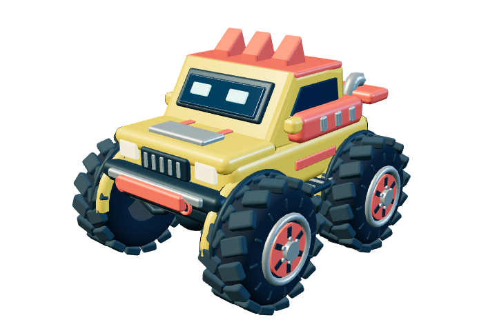

James
The ideas, the imagination, and the test drives. His reactions help shape the next adventure.
OUR FAMILY'S STORY
He's three now. At two and a half, James was already creating complete games with his parent and AI.

HOW IT STARTED
James's parent works in AI operations and wanted to spend more time with him. They began making projects together, using AI to turn James's ideas into things he could play with.
At just two and a half, James was already creating full games with that help. He brought the imagination; his parent helped guide the projects; AI helped turn their ideas into code, artwork, and working games.
Monster Skyway grew from that same spirit. James loves monster trucks, huge tires, flames, flying robots, and fire trucks. His next idea might be a canyon to jump or a tow truck to pull him back onto the road. Playing together gives us the next thing to build together.
For our family, this is a glimpse of what AI can make possible: more people able to create what they imagine, and more chances to connect with each other along the way.
The ideas, the imagination, and the test drives. His reactions help shape the next adventure.
Time together, listening to what he loves, and guiding the game as it grows.
Help with coding, visuals, and testing, with the family choosing what belongs in the game.
THERE'S ROOM IN THIS GARAGE
We shared Monster Skyway on GitHub so other families can enjoy it, learn from it, and make it their own.